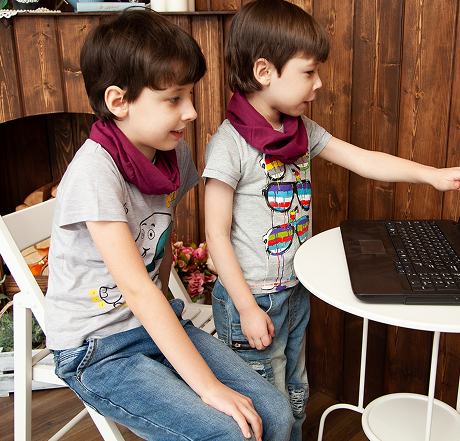
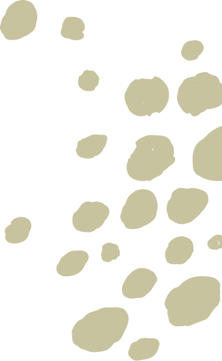
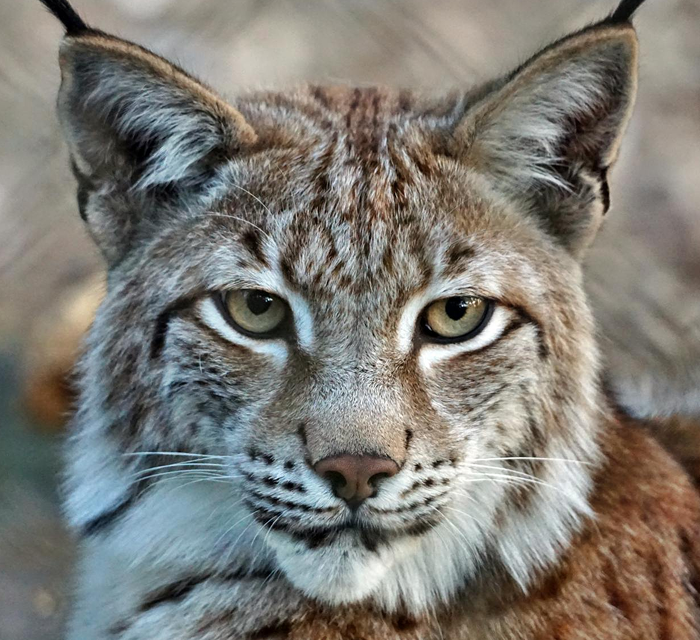
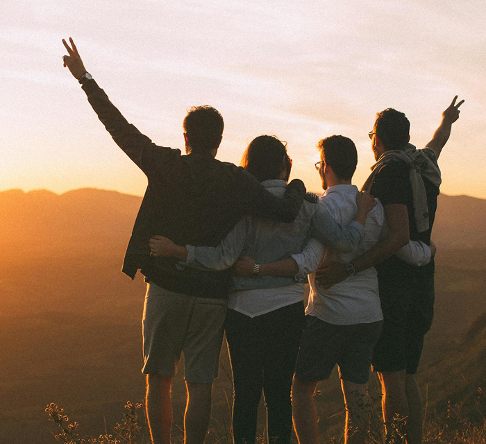
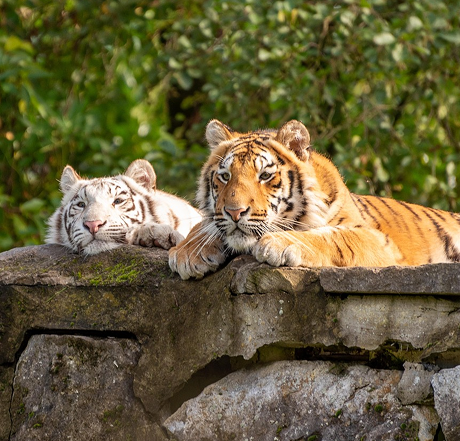
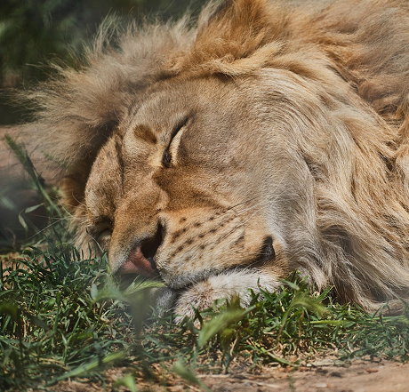
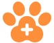
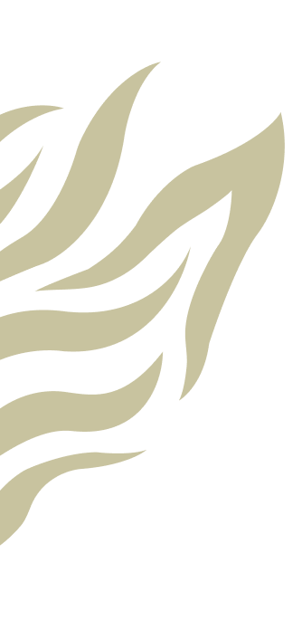
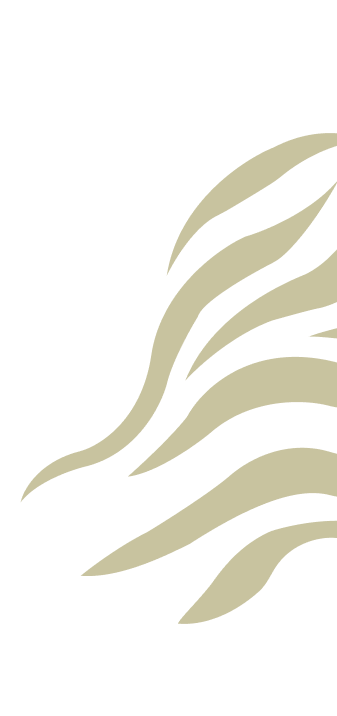

Szkoła Ochrony Dzikich Zwierząt
Edukacja młodzieży i dorosłych na temat ochrony dzikich kotów. Warsztaty i szkolenia dotyczące zagrożeń, ochrony i rehabilitacji rysi, panter i innych gatunków.

Lynx Foundation to organizacja, która od lat stawia na pierwszym miejscu ochronę dzikich kotów.

Lynx Foundation to organizacja non-profit powstała z miłości i szacunku do dzikich kotów. Działamy na rzecz ochrony zagrożonych gatunków dużych kotów – od rysi, przez lamparty, aż po lwy i tygrysy. Naszą misją jest ratowanie, rehabilitacja i zapewnienie bezpiecznego schronienia zwierzętom, które padły ofiarą przemytu, nielegalnych hodowli, cyrków lub utraciły swoje naturalne środowisko.
Działamy lokalnie i globalnie – łącząc siły z ekspertami, weterynarzami i organizacjami na całym świecie. Edukujemy, interweniujemy i dajemy tym niezwykłym zwierzętom drugą szansę na życie.

Wierzymy, że każde dzikie zwierzę zasługuje na życie wolne od cierpienia i wykorzystania. Dlatego walczymy z handlem dzikimi kotami, edukujemy społeczeństwo o ich potrzebach i prawach oraz wspieramy projekty przywracające je naturze..
Nasze wartości to szacunek do dzikiej natury, transparentność działań, etyczna opieka i rehabilitacja, działanie dla dobra gatunku, nie człowieka. Lynx Foundation to nie tylko fundacja – to społeczność ludzi, którzy nie godzą się na obojętność wobec losu dzikich kotów.

Edukacja młodzieży i dorosłych na temat ochrony dzikich kotów. Warsztaty i szkolenia dotyczące zagrożeń, ochrony i rehabilitacji rysi, panter i innych gatunków.

Współpraca z lokalnymi organizacjami w Azji, by walczyć z kłusownictwem i nielegalnym handlem dzikimi kotami, takimi jak tygrysy i lamparty.

Stworzenie ośrodka rehabilitacyjnego, w którym uratowane dzikie koty będą przechodzić rekonwalescencję i przygotowanie do powrotu do natury.
„Każdy dziki kot zasługuje na życie pełne wolności, bezpieczeństwa i szacunku. Założyliśmy tę fundację, aby dać im szansę na lepsze jutro. Wierzymy, że razem możemy ocalić nie tylko te niesamowite zwierzęta, ale także zachować równowagę w naturze, której częścią są one od wieków. Nasza praca to nasza misja – nie dla nas, ale dla przyszłych pokoleń dzikich kotów i naszej planety.”
- Założyciel firmy
Nasza misja to nie tylko pomoc dzikim kotom, ale również walka o ich przyszłość. Rysie, tygrysy, lwy i inne dzikie koty są kluczowymi elementami ekosystemów, ale ich przetrwanie jest zagrożone przez kłusownictwo, utratę siedlisk i nielegalny handel. Nasza fundacja działa, by chronić te majestatyczne zwierzęta, zapewniając im bezpieczeństwo, rehabilitację oraz edukację społeczną. Wierzymy, że każdy z nas może pomóc w ochronie tych unikalnych stworzeń i przywróceniu równowagi w naturze.
Reagujemy na przypadki znęcania się, przetrzymywania i zagrożenia życia dzikich kotów na świecie.
Reagujemy na przypadki znęcania się, przetrzymywania i zagrożenia życia dzikich kotów na świecie.
Reagujemy na przypadki znęcania się, przetrzymywania i zagrożenia życia dzikich kotów na świecie.
Reagujemy na przypadki znęcania się, przetrzymywania i zagrożenia życia dzikich kotów na świecie.

Reagujemy na przypadki znęcania się, przetrzymywania i zagrożenia życia dzikich kotów na świecie.
Reagujemy na przypadki znęcania się, przetrzymywania i zagrożenia życia dzikich kotów na świecie.


Logo Lynx Fundation przedstawia stylizowaną głowę rysia otoczoną liśćmi, co symbolizuje ochronę dzikiej przyrody i troskę o zagrożone gatunki. Minimalistyczny styl i stonowana kolorystyka oddają równowagę między siłą natury a delikatnością działań opartych na szacunku.
Fundacja powstała z potrzeby reagowania na dramatyczną sytuację dzikich kotów na świecie. Jej symbolem stała się rysica, której nie udało się uratować, ale której historia zapoczątkowała realną zmianę. Dziś Lynx Fundation działa w Indiach, Tanzanii i Brazylii, ratując, rehabilitując i chroniąc wielkie koty tam, gdzie tego potrzebują.

© 2025 Beata Kurek | Fundacja Lynx Foundation ratująca dzikie koty. Wszystkie prawa zastrzeżone.
Zaobserwuj nas